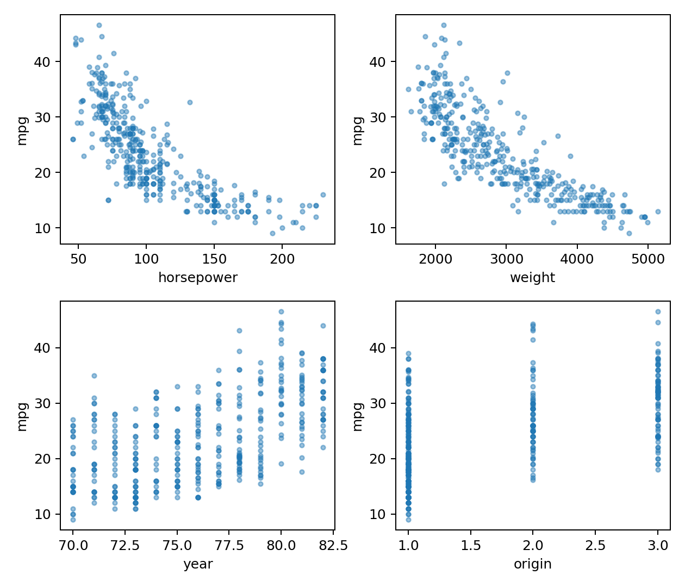

代码 2.4-36 · 第9(f)：观察mpg与候选输入的关系
按Notebook顺序运行。后续代码依赖前面定义的变量。真实数据来自教材官网。
逐步读代码
axes.flat把2×2图区逐个取出，zip将它们依次配给四个输入；每轮用当前输入作横轴、mpg作纵轴。auto_full[quantitative].corr()得到数值变量两两相关系数矩阵；取["mpg"]获得各变量与mpg的相关列。.drop("mpg")从这个Series中删除mpg自身那项，避免展示恒为1的自身相关；round(4)只简化输出。- origin没有进入这里的定量变量相关表；它的散点竖带应按类别解释。绘图保存与关闭作用于包含四格的整图。
实际运行输出
cylinders -0.7776
displacement -0.8051
horsepower -0.7784
weight -0.8322
acceleration 0.4233
year 0.5805
Name: mpg, dtype: float64

下载已执行Notebook · 返回项目目录